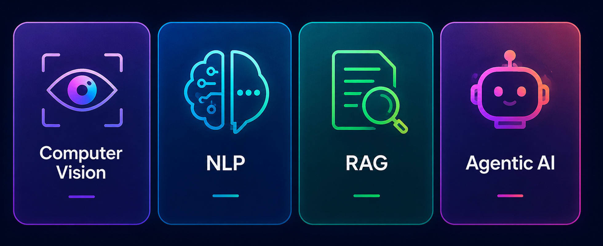

AI Engineer • Multi-Agent Systems • RAG • Computer Vision • NLP
Hadeel Alshibani
Building intelligent AI systems at the intersection of machine learning, computer vision, NLP, RAG, and real-world impact.
Fresh Artificial Intelligence graduate from Princess Nourah bint Abdulrahman University (GPA 4.45/5.00). Experienced across the AI pipeline from data preparation and model development to evaluation, APIs, and practical AI products.
4.45/5GPA
BSc AIPNU Graduate
RiyadhSaudi Arabia

NLP
RAG
Agentic AI
Machine Learning
Deep Learning
LLMs
MLOps
About Me
Turning AI concepts into practical systems.
I’m a fresh Artificial Intelligence graduate from Princess Nourah bint Abdulrahman University with a GPA of 4.45/5.00. My work combines machine learning, deep learning, computer vision, NLP, recommendation systems, agentic AI, and RAG systems.
I enjoy building AI solutions that are clear, useful, and connected to real-world decision-making — from academic projects and bootcamp work to applied systems such as Aminoon, LeafGuard, and SDAIA Agentic RAG.
Experience
Background
Education, cooperative training, and AI technical development.
Jan 2026 – May 2026
AI Co-op Trainee
Saudi Data & AI Authority (SDAIA)
Completed cooperative training in an AI-focused environment, gaining hands-on experience in applied artificial intelligence workflows. During the training, I worked on a RAG-based AI project and contributed to building and evaluating a retrieval-augmented generation pipeline.
- Prepared and organized datasets for retrieval and response-generation workflows.
- Built a vector database using embeddings and tested document retrieval quality.
- Evaluated LLM-based answers and improved the system’s ability to provide accurate context-based responses.
RAGNLPPythonLangChainEmbeddingsVector DBEvaluation
May 2026 – Present
Agentic AI Bootcamp
AI Bootcamp
Training focused on building modern AI applications using Agentic AI, RAG pipelines, LLM orchestration, and production-ready AI workflows.
- Designed AI agents that can reason, retrieve information, and support users through intelligent workflows.
- Connected tools with language models to build practical agent-based applications.
- Strengthened skills in LLM orchestration, prompt design, workflow planning, and AI application development.
Agentic AIRAGLLMsAI AgentsWorkflow Design
2022 – May 2026
BSc Artificial Intelligence
Princess Nourah bint Abdulrahman University | GPA 4.45 / 5.00
Studied core artificial intelligence topics and applied them through academic projects that combined AI models, programming, research, and real-world problem solving.
- Completed coursework in machine learning, deep learning, NLP, computer vision, data analysis, and intelligent systems.
- Built applied projects using Python, model training, evaluation, and software development concepts.
- Developed strong foundations in AI problem solving, technical documentation, and project presentation.
Artificial IntelligenceMachine LearningDeep LearningNLPComputer Vision
Projects
Featured AI Work
Selected applied AI projects across computer vision, RAG, multi-agent systems, biodiversity AI, and NLP.
01
LeafGuard
Computer Vision • RAG • NLP • Recommendation System
End-to-end agricultural AI platform that helps farmers detect, diagnose, and treat plant diseases. The system uses YOLO11-Seg for leaf segmentation and EfficientNetV2-S for disease classification across 9 categories, with a LangChain RAG chatbot, ChromaDB vector search, product recommendations, KPI dashboard, 3D WebGL field simulation, SAR/VAT shop, and model export using ONNX and TorchScript.
Tools used
YOLO11-SegEfficientNetV2-SFastAPILangChainRAGChromaDBEmbeddingsRecommendation SystemLightning AIWebGLONNXTorchScript
02
Intelligent Traffic Control System
Multi-Agent Simulation • Smart Cities
Multi-agent smart traffic simulation built with JADE. A CentralAgent coordinates three TrafficLightAgents through FIPA-ACL messages to manage normal signal rotation, emergency vehicle priority, and pedestrian crossing mode, then automatically returns to normal operation.
Tools used
Multi-Agent SystemJADEJavaFIPA-ACLSmart Cities
03
Aminoon
Graduation Project • Biodiversity AI • Explainable ML
My graduation project: an AI-powered biodiversity monitoring platform built to support conservation decisions through extinction risk prediction, habitat suitability modeling, forecasting, and explainable insights.
- Used Random Forest, LSTM forecasting, Ridge ensemble modeling, and MaxEnt-style logistic regression for species distribution modeling.
- Added SHAP explainability and recommendation logic for species and threat-level interventions.
- Built a FastAPI and SQLite-backed prototype data flow with analysis and visualization outputs.
Tools used
PythonPandasNumPyscikit-learnTensorFlow/KerasLSTMRandom ForestRidgeLogistic RegressionSHAPFastAPISQLiteMatplotlib
04
SDAIA Agentic RAG
Agentic RAG • APIs • Evaluation
Agentic RAG platform for knowledge-grounded AI interactions, document upload workflows, secure chat sessions, and evaluation dashboards.
- Built FastAPI backend features for authentication, protected routes, chat history, upload indexing, and streaming responses.
- Implemented FAISS vector search with OpenAI embeddings, SQL knowledge search, safety checks, and an agentic router.
- Added evaluation workflows for retrieval quality, answer quality, judge-based scoring, and knowledge-base summaries.
Tools used
FastAPIPythonOpenAI APIFAISSRAGAgentic AIEmbeddingsSQLiteSQLAlchemyJWT AuthPydanticReactViteAxiosEvaluation Metrics
05
Ticket-to-PR Agent
Agents • Git • Automation
Autonomous software engineering agent that converts development tickets into implementation-ready pull requests.
Tools used
AgentsGitAutomation
06
Saudi Cultural Heritage AI Agent
LLM App • Arabic • AI Agent
Interactive conversational AI system designed to promote Saudi cultural heritage and educational experiences.
Tools used
LLM AppArabicAI Agent
07
Arabic Sentiment Analysis
Arabic NLP • Transformers
Transformer-based sentiment analysis using AraBERT and CamelBERT for Arabic language understanding.
Tools used
AraBERTCamelBERTNLP
08
News Recommendation System
Recommendation System • Semantic Search
Personalized recommendation engine using semantic search, embeddings, and content similarity techniques.
Tools used
KeyBERTSemantic SearchEmbeddings
09
Fake News Detection
Deep Learning • NLP
Deep learning NLP system for classifying news articles using CNN and LSTM architectures.
Tools used
CNNLSTMNLP
10
AI for Cybersecurity
Cybersecurity • Machine Learning
Machine learning-based intrusion detection system for identifying malicious network behavior.
Tools used
CybersecurityMLDetection
11
Stroke Prediction System
Healthcare AI • Prediction
Healthcare AI application for predicting stroke risk using patient medical and demographic information.
Tools used
Healthcare AIPredictionML
Skills
Technical toolkit
Core technologies across the AI engineering stack.
AI & Machine Learning
- Machine Learning
- Deep Learning
- Computer Vision
- NLP & Generative AI
- RAG Systems
- Multi-Agent Systems
- Recommender Systems
Frameworks & Libraries
- PyTorch / TensorFlow
- OpenCV / YOLO
- HuggingFace Transformers
- LangChain / ChromaDB / FAISS
- scikit-learn / Pandas
- SHAP / Explainable AI
- FastAPI / Pydantic
Engineering & Tools
- Python / Java
- REST APIs / Backend Development
- SQL / SQLite / SQLAlchemy
- Git / GitHub / Jupyter / Colab
- Feature Engineering
- Model Evaluation
- API Integration
Soft Skills
Problem-solving
Analytical Thinking
Leadership
Team Collaboration
Communication
Time Management
Certifications
Professional Learning
Stanford University
AI for Medicine Specialization
Coursera · 2025AWS / Manara
Becoming a Machine Learning Engineer
2025Duke University
Explainable Machine Learning (XAI)
Coursera · 2025Duke University
Developing Explainable AI (XAI)
Coursera · 2025Misk Foundation
Data Science & Artificial Intelligence
2025IBM
Machine Learning with Python
Coursera · 2024Contact
Let’s build something intelligent.
Open to AI Engineer, AI internship, graduate, and applied AI opportunities.